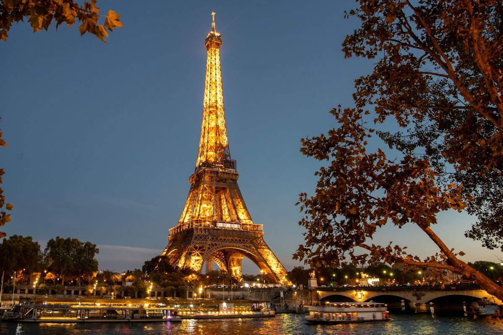

Accueil
Decouvrir
Contact

La France n'est pas une ville,c'est un Monde.
Paris
Le francais
Emmanuel Macron
Environ 632702 km²
La France, pays de l'Europe occidentale, compte des villes médiévales, des villages alpins et des plages. Paris, sa capitale, est célèbre pour ses maisons de mode, ses musées d'art classique, dont celui du Louvre, et ses monuments comme la Tour Eiffel. Le pays est également réputé pour ses vins et sa cuisine raffinée. Les peintures rupestres des grottes de Lascaux, le théâtre romain de Lyon et l'immense château de Versailles témoignent de sa riche histoire.Pour plus d'information